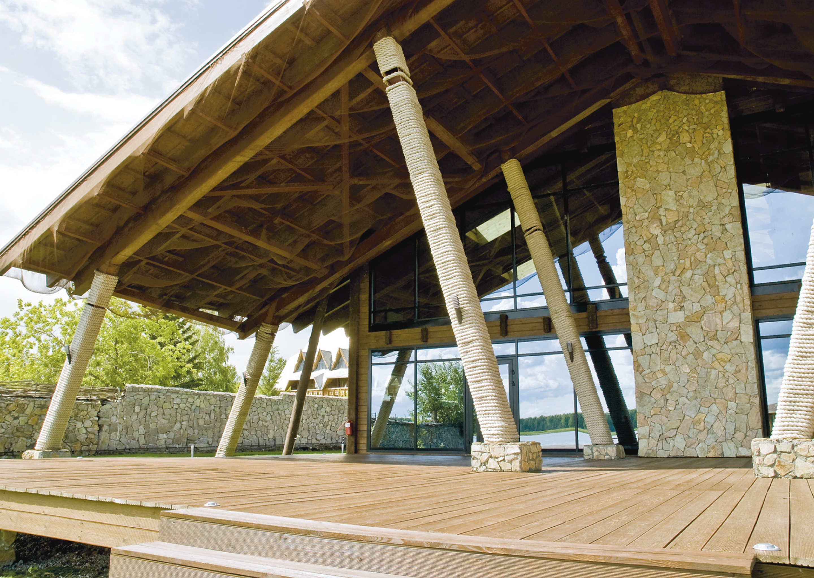
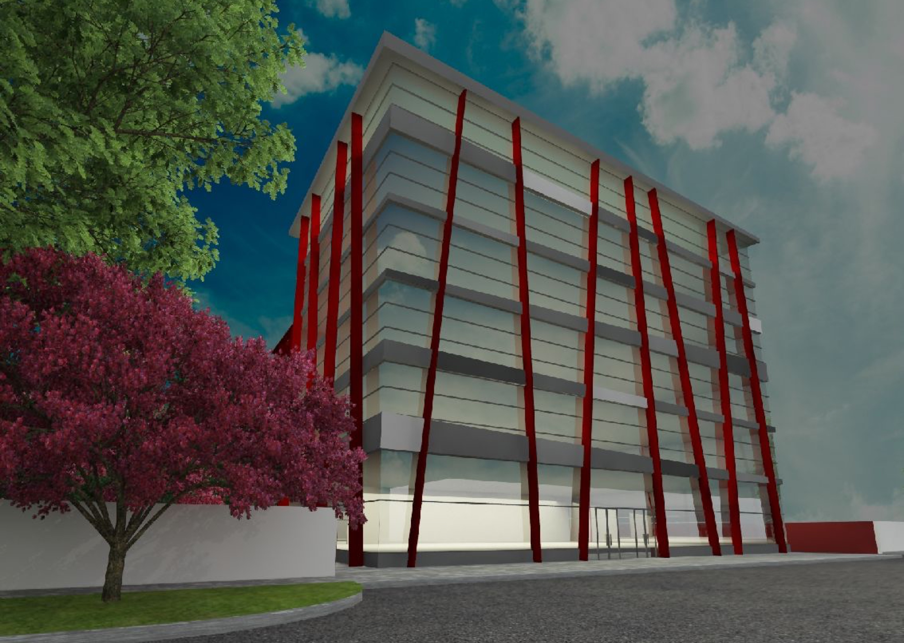
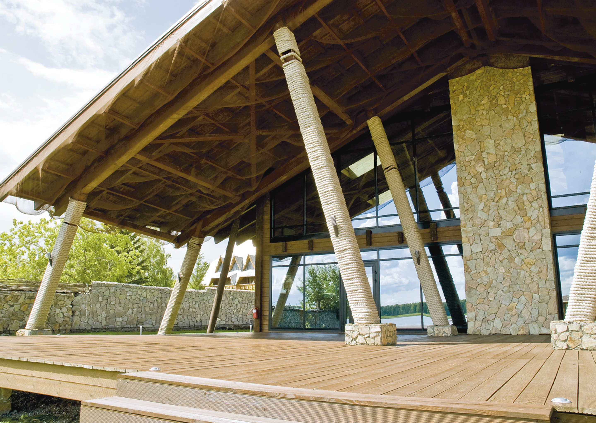
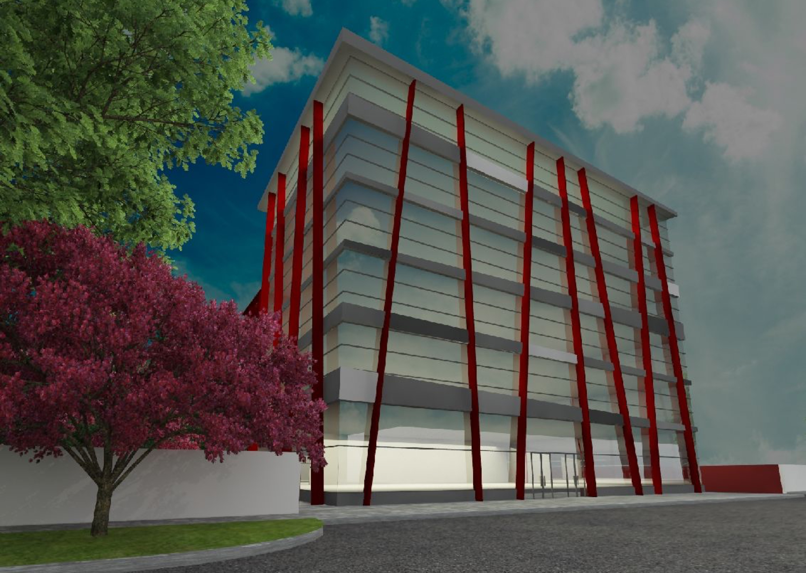

Пентхаус — отличное решение для тех, кто хочет вырваться из обыденности многоквартирных домов, при этом не покидая центр города. Команда архитектурного бюро «YURAKULIKOV» вновь воплотила в жизнь интерьер, который сделал пентхаус жилого комплекса «Клевер» точкой, балансирующей на границе между городским пейзажем и природным колоритом. Если дом — крепость, то пентхаус можно сравнить с воздушным замком двадцать первого века. Наличие величественной городской панорамы, казалось бы, диктует строгие урбанистические правила, но всё же именно дерево стало ключевым элементом интерьера, а обилие света, пробивающегося сквозь окна, лишь подчеркивает его. Паркетное покрытие, деревянные панели на стенах, мебель (ни одного стула — только деревянные скамьи), лестница — на натуральных материалах держится весь атриум.
Органичным связующим звеном между городом и природой выступают керамогранитные панели в кухонной зоне, потолочный бетон и искусственный камин. Даже светильники-шары Random Light II представляют собой симбиоз противоположностей, построенный на сочетании естественной нежности, легкости тысячи нитей и простой электрической лампочки внутри них.
Обширное пространство еще больше увеличивается при помощи зеркал, стекол, белизны и отраженного света. Зоны разделены при помощи стеклянных перегородок — именно так одна из ванных комнат отделена от спальни, расположенной на втором уровне пентхауса.
Спальня — оплот спокойствия и безмятежности. Стены и пол оформлены досками, навевая воспоминания о загородном доме. Необычная кровать составлена из разноразмерных подушек и матраса — никаких ограничений, только уют. Одну из стен полностью заменяет городская панорама: с таким видом, особенно ночью, не нужен никакой телевизор.
Комплектация
Мебель — «Милан» . Свет, инженерная доска, керамогранит — «Азбука дома». Сантехника, смесители — «Кредит Керамика» . Двери — «Minimal doors».


 
